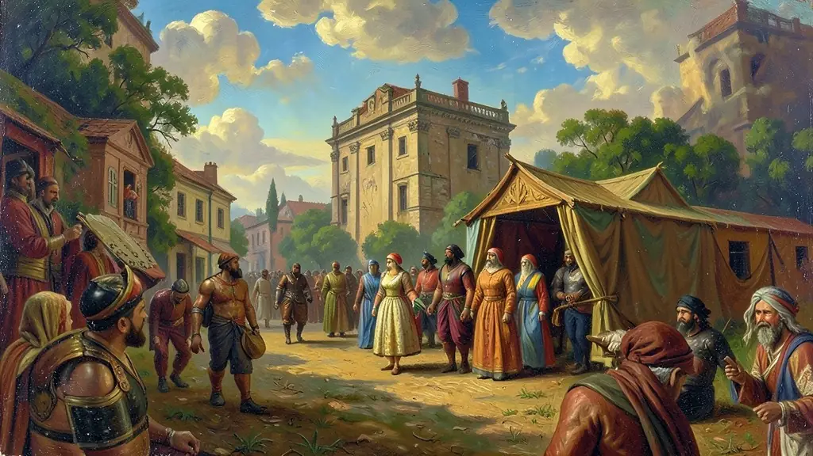
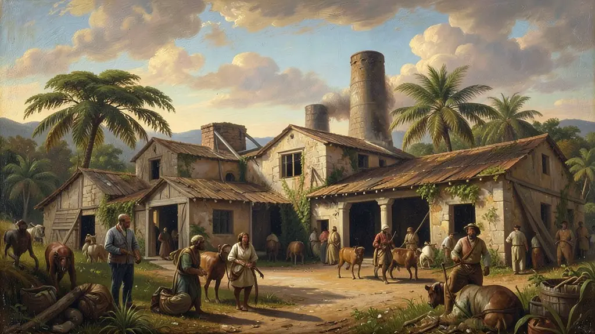
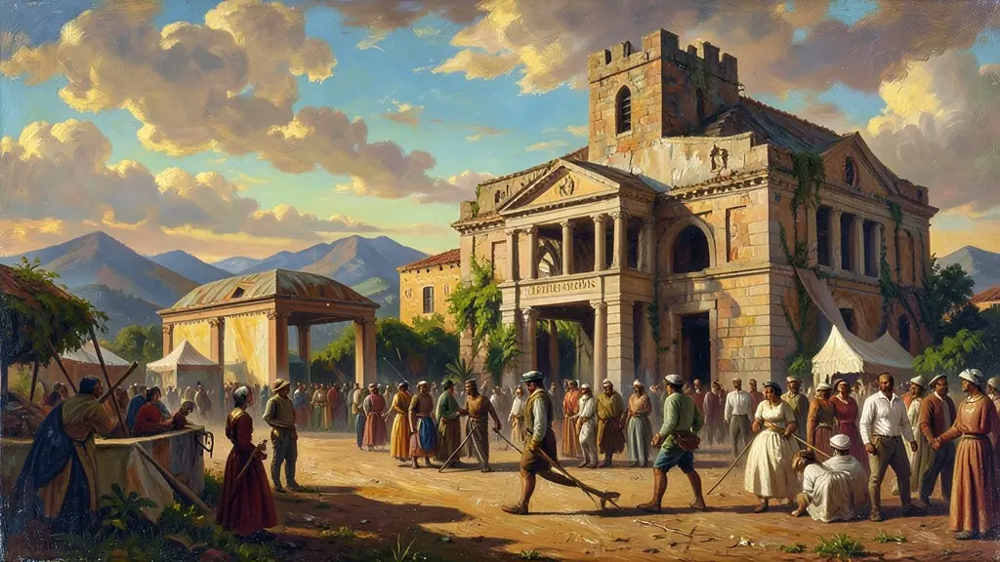

Capítulo 01
1. O Sistema de Capitanias e a Centralização Administrativa
A divisão em Capitanias Hereditárias foi a primeira tentativa de Portugal de terceirizar os custos da colonização para a nobreza. Contudo, a falta de recursos, a distância da metrópole e a resistência indígena feroz (como nas Confederações dos Tamoios) levaram o sistema ao colapso, restando apenas Pernambuco e São Vicente como centros de lucro. Em 1548, Tomé de Souza chega como primeiro Governador Geral, trazendo os jesuítas. O Estado colonial passa a ter um centro (Salvador) e a organizar a defesa do território contra invasões francesas e holandesas.

Capítulo 02
2. Economia Açucareira: A Fábrica no Campo
O engenho era o coração da colônia. Era mais que uma fazenda; era um complexo industrial, social e político. A produção dependia do capital holandês para financiamento e refino, e do braço africano para o trabalho bruto. A estrutura social era piramidal e rígida: no topo, o Senhor de Engenho; abaixo, os homens livres pobres; e na base, os escravizados malnutridos e explorados. Gilberto Freyre e outros historiadores debatem o conceito de 'Sociedade Patriarcal', onde o poder emanava da Casa-Grande, controlando inclusive o espaço público através das ordens religiosas.

Capítulo 03
3. O Ciclo do Ouro e a Reforma de Pombal
A extração do ouro no século XVIII transformou o Brasil. Pela primeira vez, houve um mercado interno significativo de gado, alimentos e tecidos para abastecer as Minas Gerais. A Coroa Portuguesa, sob a gestão do Marquês de Pombal, intensificou a fiscalização, criando as Casas de Fundição para evitar o contrabando de 'ouro em pó'. Pombal também expulsou os jesuítas, buscando secularizar a educação e otimizar a arrecadação. Esse período viu o nascimento do Barroco Mineiro, uma expressão artística de opulência e religiosidade financiada pela riqueza mineradora, personificada por Aleijadinho.

Capítulo 04
4. Escravidão, Corpos e Almas
O tráfico negreiro não foi apenas uma necessidade laboral, foi o motor do Império Português. Milhões de africanos de diferentes etnias (Bantos, Iorubás) foram trazidos à força. Na colônia, a reificação do ser humano era o padrão, mas as brechas jurídicas (como a alforria) e as festandanças religiosas permitiam a sobrevivência de tradições. A resistência não era apenas o Quilombo; era o sincretismo religioso, o aborto como protesto, a quebra de ferramentas e o lento caminhar no trabalho. O Quilombo de Palmares, o 'Estado dentro do Estado', durou quase um século, desafiando a lógica de que o escravizado era desmunido de organização política.
Capítulo 05
5. Revoltas Emancipacionistas: O Grito da Independência
No final do século XVIII, o descontentamento com o Pacto Colonial explodiu. Inspirada pela independência dos EUA, a Inconfidência Mineira (1789) foi um movimento de elite contra a tributação (Derrama). Já a Conjuração Baiana (1798), influenciada pela Revolução Francesa e pela Independência do Haiti, teve caráter popular, pedindo a abolição da escravidão e igualdade racial. Ambos os movimentos foram duramente reprimidos, mas expuseram que o domínio português era uma contagem regressiva.
A formação do Brasil colonial estruturou-se sob a lógica do Sistema Colonial Mercantilista, que concebia a colônia estritamente como um apêndice comercial destinado a enriquecer a metrópole. Caio Prado Júnior argumenta que o Brasil não nasceu de um projeto civilizatório, mas de um empreendimento de exploração voltado para o mercado externo europeu.
O tripé plantation (latifúndio, monocultura e escravidão) definiu a estrutura social, econômica e demográfica do território. A necessidade de garantir o lucro contínuo consolidou a escravidão transatlântica como a instituição basilar da sociedade, engendrando um modelo de estratificação social profundamente desigual e excludente.
Em provas como o Enem, enfatiza-se como o pacto colonial restringia a acumulação de riquezas internamente. A exclusividade de comércio e a ausência de indústrias locais criaram uma dependência estrutural que, de muitas formas, sobreviveu à própria independência política, reverberando nas vulnerabilidades econômicas contemporâneas.
Fonte: PRADO JÚNIOR, Caio. Formação do Brasil Contemporâneo. São Paulo: Brasiliense, 2011.
Atividades interativas
Questões para fixar
O Pacto Colonial, pilar do Mercantilismo, determinava que a produção das colônias deveria:
A historiografia clássica de Gilberto Freyre em 'Casa-Grande e Senzala' é frequentemente debatida hoje por ser acusada de:
Qual era o objetivo principal do sistema econômico do Mercantilismo, que influenciou a fundação do Brasil como colônia?
Qual foi a consequência da descentralização inicial das Capitanias Hereditárias no Brasil?
Qual foi o impacto da descoberta de metais preciosos no Brasil no final do século XVII e início do século XVIII?